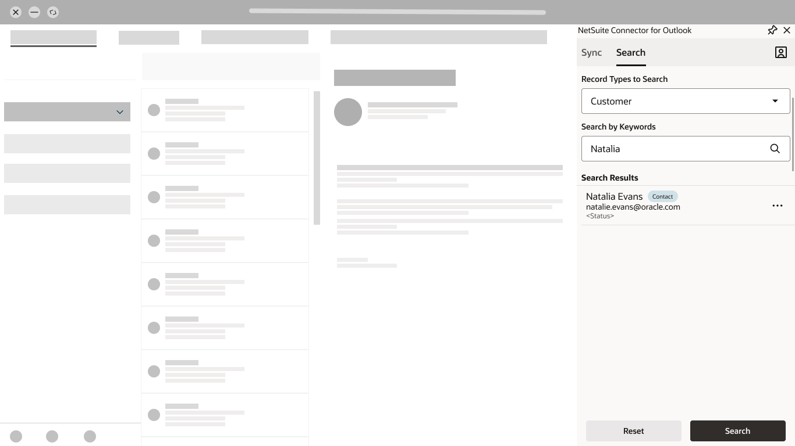
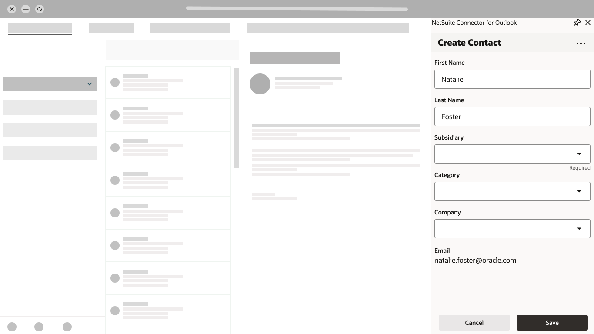
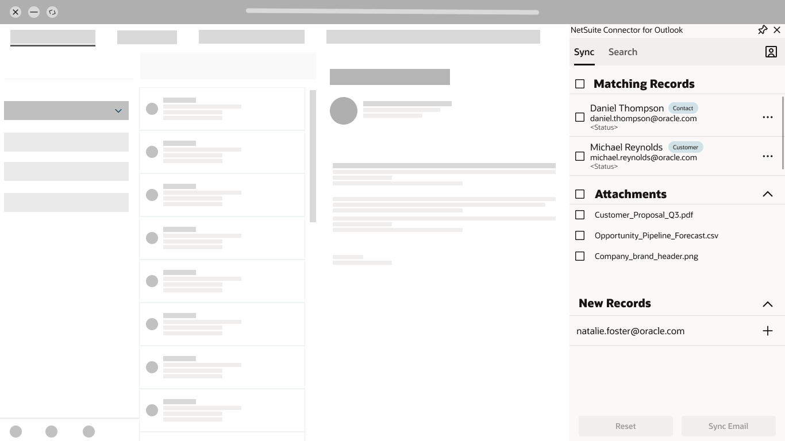

Frame the workflow
Map the roles, use cases, and handoff between customer communication and ERP records.
CASE STUDY 02 / PRODUCTIVITY & ERP
Research and interaction design shaped an in-inbox experience for finding, creating, and connecting customer records without leaving Outlook.
Competitive synthesis · MVP prioritisation · Interaction design · In-inbox flows
Keep customer work in the inbox
Find, create, select, confirm
Released through the Marketplace
Customer conversations lived in Outlook while account and activity information lived in ERP. Manual transfer introduced duplicate effort, fragmented visibility, and context switching. The product needed a focused way to connect those environments while making the destination and selected content clear.
Map the roles, use cases, and handoff between customer communication and ERP records.
Review five connector offerings and synthesise public customer feedback.
Compare features and separate essential record tasks from later product horizons.
Create an achievable flow within the plugin footprint and engineering constraints.
Moving between Outlook and ERP interrupted customer-facing work.
Put essential customer-record tasks in the Outlook sidebar.
Fast filing still required confidence in the record match.
Keep search, matching context, and review visible throughout the task.
Communication could relate to several records and include attachments.
Support inline creation, multiple record links, and selective attachment sync.
Automation was useful when people understood what would be connected.
Make the destination and selected content visible before confirmation.
The released direction concentrated the core record workflow into one path: find the customer context, create what is missing, select records and content, then confirm the sync. The focused experience launched publicly through the Marketplace. No adoption or time-saving percentage is claimed.



WHAT I TAKE FORWARDA useful connector preserves customer context while keeping consequential actions visible and under the user’s control.
The screens below illustrate the publicly launched version: search, inline creation, and controlled synchronisation.